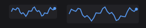
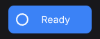
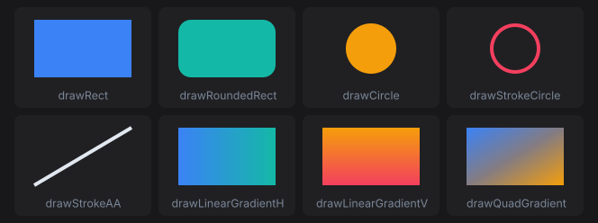
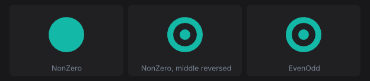
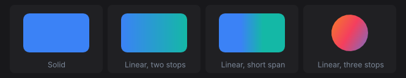
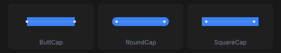
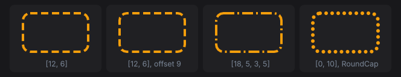
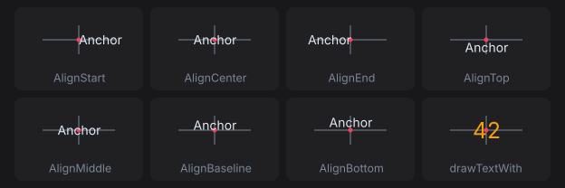
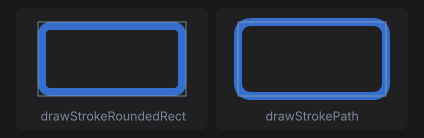

Custom Drawing & Controls
When the built-in widgets do not cover what you need, you can draw directly with the 2D canvas API. The six controls in NanoUI.Widgets.Custom are built on this same API and double as clean templates for your own widgets.
Built-in custom controls
NanoUI re-exports all six from NanoUI.Widgets.Custom:
| Control | Signature | Default size | Notes |
|---|---|---|---|
knob | Float -> Float -> Var Float -> NanoUI () | 36x36 | Min, max, value; drag vertically, scroll wheel, or use arrow keys |
toggleSwitch | Var Bool -> NanoUI () | 44x24 | Toggle with click, Space, or Enter |
circularProgress | Float -> NanoUI () | 32x32 | Progress fraction in [0, 1] |
progressBar | Float -> NanoUI () | full width, 12 high | Progress fraction in [0, 1] |
spinner | NanoUI () | 18x18 | Indeterminate spinner; wakes the loop at 60 Hz while visible |
sparkline | [Float] -> NanoUI () | 80x24 | Auto-scales vertically to the input range |
Every control provides a primed form (knob', toggleSwitch', and so on) returning a Response, plus a ...With variant accepting a layout modifier and custom dimensions:
controls :: Var Float -> Float -> [Float] -> NanoUI ()
controls volume progress samples = do
knobWith alignMiddle 48 0 100 volume
progressBarWith fillW 6 progress
sparklineWith (fixedWH 120 32) 120 32 samples
sparkline stretches the minimum value to the bottom of its plot box and the maximum to the top, so series of different scales remain readable in a tight strip. Here is a sparkline at its default size next to a wider sparklineWith:
sparklines :: [Float] -> NanoUI ()
sparklines samples = rowWith (gap 16 . alignMiddle) $ do
sparkline samples
sparklineWith (fixedWH 120 32) 120 32 samples

If you need axes, legends, or hover readouts, use plot from nano-ui-diagrams instead (see Charts and diagrams).
Here is a compact settings row combining a knob and a live readout:
settingsRow :: Var Bool -> Var Float -> NanoUI ()
settingsRow enabled volume = rowWith (gap 12 . alignMiddle) $ do
toggleSwitch enabled
labelWith (alignMiddle . fixedW 64) "Enabled"
knob 0 100 volume
v <- readVar volume
labelWith (alignMiddle . fontMono . fixedW 48) (T.pack (show (round v :: Int)))
Pinning the numeric label with fixedW prevents the row from jittering as digits change, and reading the Var below the knob keeps drags to a single pass.
spinner paces itself with wakeAfter (60 steps per second) only while it is visible on screen; once scrolled or clipped out of view, it stops requesting frames. Avoid calling a global keepAnimating, which would keep the event loop spinning even when no spinner is on screen.
How custom controls are structured
Each control in NanoUI.Widgets.Custom follows the same four steps:
- Claim an ID with
freshWidget. - Size and render it via
CustomWidgetSpecandrunCanvasFor. - Handle user input with
useDrag2DOn,useWheelDeltaOn, anduseKeyNav. - Commit edits back to the caller’s
VarwithbindVarorfinishInput.
Canvas drawing
canvas reserves a rectangle using a layout modifier and runs a CanvasM block inside it. The rectangle passed to your drawing callback is in window coordinates, so draw relative to its Rect x y w h:
import NanoUI.Path qualified as P
badge :: NanoUI ()
badge = void $ canvas (fixedWH 120 40) $ \r@(Rect x y _ h) -> do
drawRoundedRect r 8 blue
drawStrokePath (P.circle (V2 (x + 20) (y + h / 2)) 8) 2 colorWhite
drawText (V2 (x + 68) (y + h / 2)) AlignCenter AlignMiddle "Ready" colorWhite

canvas returns a Response; wrap it in void if your drawing is purely decorative. canvasConfigured adds content-key caching, custom cursor shapes, and pointer tracking. When you need full control over sizing, keyboard handling, or focus, drop down to customWidget with a CustomWidgetSpec:
dot :: Float -> Float -> NanoUI Response
dot angle volume = do
(resp, ()) <- customWidget defaultCustomWidgetSpec
{ widgetLayout = fixedWH 48 48
, widgetContent = contentKey [angle, volume]
, widgetDraw = \cdc (Rect x y w h) -> runCanvasFor cdc $ do
drawCircle (V2 (x + w / 2) (y + h / 2)) 16 (themeAccent (cdcTheme cdc))
, widgetCursor = Just (\_ _ _ -> UiCursorPointer)
}
pure resp
Inside widgetDraw, runCanvasFor adjusts curve tessellation automatically for the display’s DPI scale, and drawContext / cdcTheme give you the active Theme, font metrics, and hover/press state.
Reading the canvas examples
The visual reference below comes straight from CanvasExamples.hs, rendered directly to SVG by nano-ui-svg-glossary. Each list pairs a label with a drawing callback, sharing these colors and helper:
ink, blue, teal, amber, rose :: Color
ink = colorRGB 226 232 240
blue = colorRGB 59 130 246
teal = colorRGB 20 184 166
amber = colorRGB 245 158 11
rose = colorRGB 244 63 94
centre :: Rect -> V2
centre (Rect x y w h) = V2 (x + w / 2) (y + h / 2)
Thin gray guides, dots, dashed outlines, and red crosshairs in the images below are reference annotations overlaid by the generator, not part of the snippets themselves.
Rectangles, circles, and gradients
The basic drawing primitives take a rectangle or a center and radius, with no NanoUI.Path import required.

primitives :: [(Text, Rect -> CanvasM ())]
primitives =
[ ("drawRect", \r -> drawRect r blue)
, ("drawRoundedRect", \r -> drawRoundedRect r 14 teal)
, ("drawCircle", \r -> drawCircle (centre r) 28 amber)
, ("drawStrokeCircle", \r -> drawStrokeCircle (centre r) 28 4 rose)
, ("drawStrokeAA", \(Rect x y w h) -> drawStrokeAA (V2 x (y + h)) (V2 (x + w) y) 4 ink)
, ("drawLinearGradientH", \r -> drawLinearGradientH r blue teal)
, ("drawLinearGradientV", \r -> drawLinearGradientV r amber rose)
, ("drawQuadGradient", \r -> drawQuadGradient r blue teal amber rose)
]
drawStrokeCircle insets its stroke inside the radius. drawStrokeAA draws an anti-aliased segment with square ends, while drawStroke skips anti-aliasing for crisp horizontal or vertical rules. drawQuadGradient takes its four corner colors clockwise starting from the top-left.
Paths
A Path is a sequence of commands combined with <>. Start a subpath with moveTo, extend it with lineTo, quadTo, cubicTo, and arc, and connect back to the start with close. Below, each path is stroked with drawStrokePath (path r) 3 blue; solid dots mark path vertices, while hollow rings mark control points and arc centers.

segments :: [(Text, Rect -> P.Path)]
segments =
[ ("lineTo", \(Rect x y w h) ->
P.moveTo (V2 x (y + h)) <> P.lineTo (V2 (x + w / 2) y) <> P.lineTo (V2 (x + w) (y + h)))
, ("quadTo", \(Rect x y w h) ->
P.moveTo (V2 x (y + h)) <> P.quadTo (V2 (x + w / 2) (y - 12)) (V2 (x + w) (y + h)))
, ("cubicTo", \(Rect x y w h) ->
P.moveTo (V2 x (y + h)) <> P.cubicTo (V2 x y) (V2 (x + w) (y + h)) (V2 (x + w) y))
, ("arc", \r -> P.arc (centre r) 28 0 (3 * pi / 2))
, ("moveTo, arc, close", \r -> P.moveTo (centre r) <> P.arc (centre r) 28 0 (3 * pi / 2) <> P.close)
]
Angles are in radians. Because y increases downward, positive angles sweep clockwise: 0 points to 3 o’clock, so a positive sweep of 3 * pi / 2 runs three-quarters of the way around clockwise. Calling arc after moveTo draws a straight line from the current point to the start of the arc, which makes pie wedges trivial.
Shape constructors build complete standalone subpaths. They never connect to prior subpaths, so joining them with <> builds a single multi-subpath shape:

shapes :: [(Text, Rect -> CanvasM ())]
shapes =
[ ("rect", \r -> shape (P.rect r))
, ("roundedRect", \r -> shape (P.roundedRect r 12))
, ("roundedRectCorners", \r -> shape (P.roundedRectCorners r 24 4 24 4))
, ("circle", \r -> shape (P.circle (centre r) 28))
, ("ellipse", \r -> shape (P.ellipse (centre r) (V2 48 22)))
, ("polygon", \(Rect x y w h) -> shape (P.polygon [V2 (x + w / 2) y, V2 (x + w) (y + h), V2 x (y + h)]))
, ("polyline", \(Rect x y w h) ->
drawStrokePath (P.polyline [V2 x (y + h), V2 (x + w / 3) y, V2 (x + 2 * w / 3) (y + h), V2 (x + w) y]) 2 blue)
]
where
shape p = drawPath p (withAlpha blue 0.35) >> drawStrokePath p 2 blue
roundedRectCorners takes corner radii in CSS border-radius order: top-left, top-right, bottom-right, bottom-left. polygon closes the contour while polyline leaves it open (so the polyline is only stroked above). Filling a path implicitly closes every subpath.
Fill rules
drawPath fills using P.NonZero, while drawPathWith lets you choose both the fill rule and paint. All three cells below fill three concentric circles:

fillRules :: [(Text, Rect -> CanvasM ())]
fillRules =
[ ("NonZero", \r -> drawPathWith P.NonZero (rings r) (P.Solid teal))
, ("NonZero, middle reversed", \r -> drawPathWith P.NonZero (reversedMiddle r) (P.Solid teal))
, ("EvenOdd", \r -> drawPathWith P.EvenOdd (rings r) (P.Solid teal))
]
where
rings r = P.circle (centre r) 30 <> P.circle (centre r) 20 <> P.circle (centre r) 9
-- A negative sweep runs the middle circle anticlockwise.
reversedMiddle r@(Rect x y w h) =
P.circle (centre r) 30
<> P.moveTo (V2 (x + w / 2 + 20) (y + h / 2))
<> P.arc (centre r) 20 0 (-2 * pi)
<> P.close
<> P.circle (centre r) 9
Because P.circle always winds clockwise, all three circles add together under NonZero to produce a solid disc. Reversing the middle circle cancels out its interior and punches a hole. EvenOdd ignores winding direction and simply alternates filled and empty as subpaths nest. Note that self-intersecting or crossing subpaths are not resolved against each other, so keep cutouts strictly inside their enclosing contour.
Paints
P.Solid fills with a flat color. P.Linear from to stops interpolates color stops along the segment from from (offset 0) to to (offset 1):

paints :: [(Text, Rect -> CanvasM ())]
paints =
[ ("Solid", \r -> drawPathWith P.NonZero (P.roundedRect r 10) (P.Solid blue))
, ("Linear, two stops", \r@(Rect x y w _) ->
drawPathWith P.NonZero (P.roundedRect r 10) (P.Linear (V2 x y) (V2 (x + w) y) [(0, blue), (1, teal)]))
, ("Linear, short span", \r@(Rect x y w _) ->
drawPathWith P.NonZero (P.roundedRect r 10) (P.Linear (V2 (x + w / 3) y) (V2 (x + 2 * w / 3) y) [(0, blue), (1, teal)]))
, ("Linear, three stops", \r@(Rect x y w h) ->
drawPathWith P.NonZero (P.circle (centre r) 30) (P.Linear (V2 x y) (V2 (x + w) (y + h)) [(0, amber), (0.5, rose), (1, blue)]))
]
Outside the first and last stops, the gradient clamps to the endpoint colors (visible in the middle-third example). Strokes accept Paint values too, so outlines can use gradients just like fills.
Strokes
drawStrokePathWith accepts a P.Stroke record. Start with P.stroke width (butt caps, miter joins, solid line) and update the fields you need. Path strokes are always centered on the path geometry.
Line caps control how open path ends and individual dashes terminate. Compared against the thin path guide, ButtCap stops flush at the endpoints, while RoundCap and SquareCap extend past them by half the stroke width:

capLine :: Rect -> P.Path
capLine (Rect x y w h) = P.moveTo (V2 (x + 16) (y + h / 2)) <> P.lineTo (V2 (x + w - 16) (y + h / 2))
caps :: [(Text, Rect -> CanvasM ())]
caps =
[ (name, \r -> drawStrokePathWith (P.stroke 18) {P.strokeCap = cap} (capLine r) (P.Solid blue))
| (name, cap) <- [("ButtCap", P.ButtCap), ("RoundCap", P.RoundCap), ("SquareCap", P.SquareCap)]
]
Line joins control corners between consecutive segments. If a sharp miter point would stretch farther than strokeMiterLimit * width, it falls back to a flat bevel (demonstrated in the fourth cell with a miter limit of 1.5):

zigzag :: Rect -> P.Path
zigzag (Rect x y w h) = P.polyline [V2 (x + w / 4) (y + h - 4), V2 (x + w / 2) (y + 10), V2 (x + 3 * w / 4) (y + h - 4)]
joins :: [(Text, Rect -> CanvasM ())]
joins =
[ ("MiterJoin", withJoin (P.stroke 14) {P.strokeJoin = P.MiterJoin})
, ("RoundJoin", withJoin (P.stroke 14) {P.strokeJoin = P.RoundJoin})
, ("BevelJoin", withJoin (P.stroke 14) {P.strokeJoin = P.BevelJoin})
, ("strokeMiterLimit 1.5", withJoin (P.stroke 14) {P.strokeJoin = P.MiterJoin, P.strokeMiterLimit = 1.5})
]
where
withJoin st r = drawStrokePathWith st (zigzag r) (P.Solid teal)
strokeDash takes alternating dash and gap lengths that repeat along each subpath, and strokeDashOffset shifts where the pattern begins. Combining a zero-length dash with RoundCap produces round dots:

dashes :: [(Text, Rect -> CanvasM ())]
dashes =
[ ("[12, 6]", dashed (P.stroke 4) {P.strokeDash = [12, 6]})
, ("[12, 6], offset 9", dashed (P.stroke 4) {P.strokeDash = [12, 6], P.strokeDashOffset = 9})
, ("[18, 5, 3, 5]", dashed (P.stroke 4) {P.strokeDash = [18, 5, 3, 5]})
, ("[0, 10], RoundCap", dashed (P.stroke 6) {P.strokeDash = [0, 10], P.strokeCap = P.RoundCap})
]
where
dashed st r = drawStrokePathWith st (P.roundedRect r 12) (P.Solid amber)
Transforms
withTransform applies a P.Transform to everything drawn inside its block. Transforms compose with <> right-to-left (the right-hand transform runs first). The dashed outline below shows the arrow’s untransformed position:

arrowPath :: Rect -> P.Path
arrowPath r =
let V2 cx cy = centre r
in P.polygon [V2 (cx - 24) (cy - 6), V2 cx (cy - 6), V2 cx (cy - 16), V2 (cx + 24) cy, V2 cx (cy + 16), V2 cx (cy + 6), V2 (cx - 24) (cy + 6)]
arrow :: Rect -> CanvasM ()
arrow r = drawPath (arrowPath r) teal >> drawStrokePath (arrowPath r) 2 ink
-- | Scale about a point: move it to the origin, scale, move it back.
scaleAround :: V2 -> Float -> Float -> P.Transform
scaleAround (V2 cx cy) sx sy = P.translate cx cy <> P.scale sx sy <> P.translate (-cx) (-cy)
transforms :: [(Text, Rect -> CanvasM ())]
transforms =
[ ("translate 20 10", \r -> withTransform (P.translate 20 10) (arrow r))
, ("rotateAround c (pi / 4)", \r -> withTransform (P.rotateAround (centre r) (pi / 4)) (arrow r))
, ("scaleAround c 1.5 1.5", \r -> withTransform (scaleAround (centre r) 1.5 1.5) (arrow r))
, ("scaleAround c (-1) 1", \r -> withTransform (scaleAround (centre r) (-1) 1) (arrow r))
]
P.rotate and P.scale pivot around the window origin (0, 0). To pivot around a shape’s center instead, translate it to the origin first (P.rotateAround does this for rotation, and scaleAround above shows the equivalent for scaling). Stroke widths and dash patterns scale with the transform, which is why the scaled arrow has a thicker outline. Text positions and scales under transforms, though individual glyphs do not rotate.
Clipping
withClip rect restricts drawing inside its block to the intersection of rect and the active clip region. Every canvas starts clipped to its own widget bounds, so drawings can never accidentally spill outside their widget.

clipped :: Rect -> CanvasM ()
clipped r@(Rect x y _ h) = do
drawCircle (centre r) 34 rose
drawText (V2 (x - 6) (y + h / 2)) AlignStart AlignMiddle "text past the edge" ink
clipRect :: Rect -> Rect
clipRect (Rect x y w h) = Rect (x + 10) (y + 8) (w - 20) (h - 16)
clips :: [(Text, Rect -> CanvasM ())]
clips =
[ ("no clip", clipped)
, ("withClip box", \r -> withClip (clipRect r) (clipped r))
]
Text
drawText pos alignX alignY txt color places text relative to an anchor point (the red dot below). Alignment specifies which part of the text sits on that point: AlignStart anchors the left edge, AlignTop anchors the top of the line box, and AlignBaseline anchors the text baseline. Use drawTextWith with a TextFont to customize size, variant, weight, or slant, and drawTextClipped / drawTextClippedWith to clip a single text draw to a sub-rectangle without pushing a separate withClip scope.

textAnchors :: [(Text, Rect -> CanvasM ())]
textAnchors =
[ (name, \r -> drawText (centre r) ax AlignMiddle "Anchor" ink)
| (name, ax) <- [("AlignStart", AlignStart), ("AlignCenter", AlignCenter), ("AlignEnd", AlignEnd)]
]
<> [ (name, \r -> drawText (centre r) AlignCenter ay "Anchor" ink)
| (name, ay) <- [("AlignTop", AlignTop), ("AlignMiddle", AlignMiddle), ("AlignBaseline", AlignBaseline), ("AlignBottom", AlignBottom)]
]
<> [ ("drawTextWith", \r ->
drawTextWith defaultTextFont {textFontSize = 24, textFontWeight = WeightBold} (centre r) AlignCenter AlignMiddle "42" amber)
]
Measure strings inside the view using lineWidthUi and uiFontMetrics (or trim them to fit with truncateTextUi) and pass those measurements into your drawing callback. Both helpers load and shape the needed glyphs first. The pure lineWidth is only exact for text that has already been measured or drawn; otherwise it falls back to summing per-glyph advances, which drifts from HarfBuzz’s unrounded shaped runs over long strings.
Borders: inset vs. centered
drawStrokeRoundedRect draws its entire border inside the given rectangle. By contrast, drawStrokePath centers the stroke on the path edge, pushing half the border width outside the rectangle. The thin guide below shows the exact rectangle passed to each call:

borders :: [(Text, Rect -> CanvasM ())]
borders =
[ ("drawStrokeRoundedRect", \r -> drawStrokeRoundedRect r 12 8 (withAlpha blue 0.8))
, ("drawStrokePath", \r -> drawStrokePath (P.roundedRect r 12) 8 (withAlpha blue 0.8))
]
Always use drawStrokeRoundedRect (or inset your path by half the stroke width) when stroking a widget’s outer border so the edges do not get clipped by the widget bounds.
Content keys and caching
Without a widgetContent key, nano-ui rebuilds and diffs a custom widget’s draw ops on every frame. Adding a content key lets unchanged frames skip both rebuild and repaint, as long as the key includes every input the drawing reads:
gauge :: Float -> Float -> Float -> NanoUI Response
gauge angle volume scrollY = do
(resp, ()) <- customWidget defaultCustomWidgetSpec
{ widgetLayout = fixedWH 48 48
, widgetContent = contentKey [angle, volume, fromIntegral (round scrollY :: Int)]
, widgetDraw = \cdc rect -> runCanvasFor cdc (drawGauge rect)
}
pure resp
If you forget an input in the key, the canvas will freeze on stale pixels until something else forces a rebuild. See Stale cached drawings.
A drawing whose layout bounds never change (such as a drag ghost moved via pinAt under the pointer) receives no layout diff when it moves. Give it an explicit version hash covering whatever drives its movement:
-- ghostOps :: Rect -> SmallArray DrawOp
dragGhost :: Float -> Float -> NanoUI Response
dragGhost mx my = drawingVersioned (contentKey [mx, my]) (fixedWH 32 32) ghostOps
Without a version key, it stays frozen on the draw ops from its very first frame.
SVG icons
Parse inline SVG markup with parseSvg or load a file once at startup with loadSvg. Any stroke or fill using currentColor automatically inherits the active text color (so fontColor and semantic tones tint it directly), while hard-coded colors in the SVG stay untouched:
icons :: Svg -> Color -> NanoUI ()
icons star accent = do
svgIcon 24 star
svgIconWith (fixedWH 32 32 . fontColor accent) star
whenM (iconButton star "Star") starItem
svgIconConfigured takes an ImageConfig for CSS-style fitting (FitContain, FitCover, FitFill).
To paint an SVG inside a custom canvas, rasterize it with rasterizeSvg from NanoUI.Svg, upload it with useImageRgba, and draw the resulting ImageId. Make sure the lease key covers everything that changes the rasterized pixels (like the tint color):
starBadge :: ImageHandle Color -> Svg -> Color -> NanoUI Response
starBadge owner star tint = do
iid <- useImageRgba owner tint 32 32 (rasterizeSvg 32 32 tint star)
canvas (fixedWH 140 44) $ \(Rect x y _ _) ->
for_ iid $ \i -> drawImage (Rect (x + 8) (y + 6) 32 32) i colorWhite
For going in the other direction (exporting nano-ui draw ops or entire frames to SVG), see SVG export.